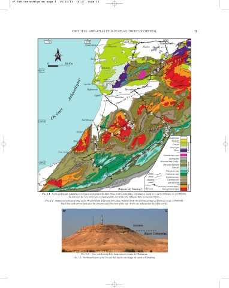
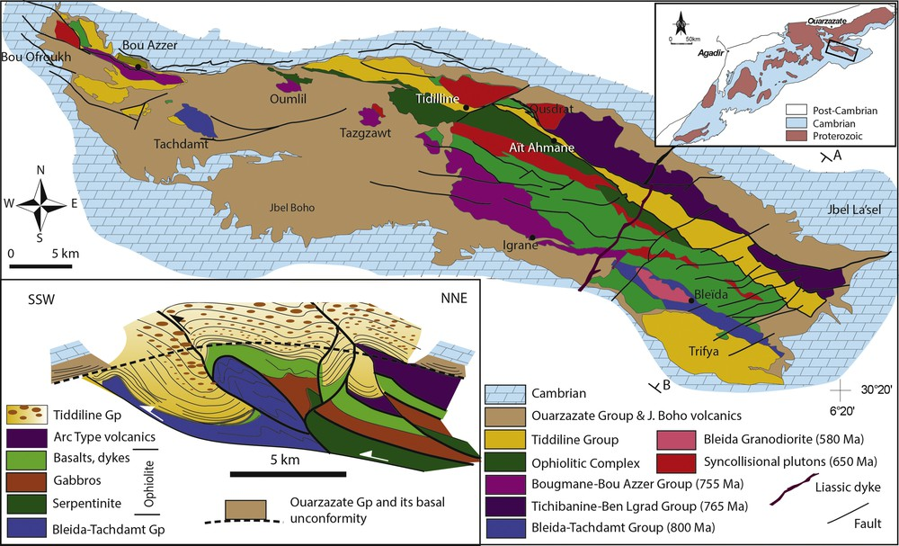
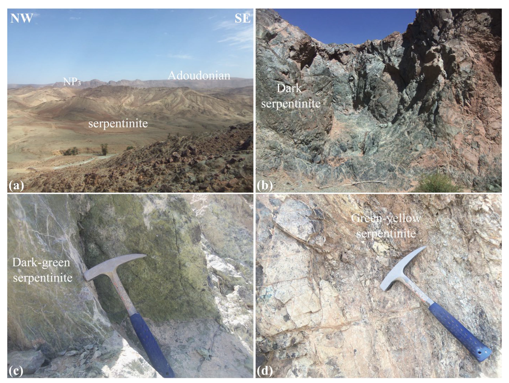

Introduction générale
L'Anti-Atlas est une grande chaîne géologique du sud du Maroc. Il se caractérise par l'affleurement de terrains précambriens anciens, localement recouverts par des séries sédimentaires paléozoïques et par des formations plus récentes.
L'intérêt de cette région réside dans la conservation de témoins de plusieurs événements géologiques : formation de la croûte continentale, évolution des domaines océaniques, convergence des plaques, magmatisme, métamorphisme, érosion et sédimentation.
Objectifs du cours
- Comprendre l'organisation géologique de l'Anti-Atlas.
- Distinguer le cycle éburnéen du cycle panafricain.
- Expliquer l'intérêt de la boutonnière de Bou Azzer.
- Comprendre la signification des ophiolites.
- Étudier les domaines du Saghro et du Kerdous.
- Relier stratigraphie, sédimentation et tectonique.
- Apprendre à interpréter une carte ou une coupe géologique.
1. L'Anti-Atlas : cadre géologique général
1.1. Situation et organisation
L'Anti-Atlas se situe au sud du Haut Atlas. Il s'étend globalement selon une direction ENE-WSW. Il expose des terrains d'âges variés, depuis le Précambrien jusqu'au Paléozoïque, ainsi que des couvertures plus récentes dans certains secteurs.

Cliquez sur la carte pour consulter le document original et agrandir les détails.
Ouvrir la carte originale
Son architecture actuelle résulte d'une histoire complexe : événements précambriens, évolution des bassins sédimentaires, déformations paléozoïques et réactivation tectonique plus récente associée à l'évolution du domaine atlasique.
1.2. Les grands domaines
- Anti-Atlas occidental : il comprend notamment le domaine du Kerdous et d'autres affleurements du socle ancien.
- Anti-Atlas central : il comprend notamment les boutonnières de Bou Azzer-El Graara et de Sirwa.
- Anti-Atlas oriental : il comprend notamment le massif et la boutonnière du Saghro.
Cette subdivision est une simplification régionale utile pour l'étude. Les limites précises dépendent du cadre structural et de la nomenclature retenue par les auteurs.
1.3. Le socle précambrien
Le socle est constitué de roches magmatiques, métamorphiques et, dans certains secteurs, de séries volcano-sédimentaires. Il enregistre plusieurs épisodes de formation et de transformation de la croûte continentale.
Parmi les roches rencontrées figurent les granitoïdes, les gneiss, les schistes, les quartzites et différentes roches volcaniques ou volcano-sédimentaires. Leur présence et leur âge varient d'une boutonnière à l'autre.
1.4. Le cycle éburnéen
Le cycle éburnéen, également appelé événement orogénique éburnéen, correspond principalement à des événements paléoprotérozoïques, autour de 2,1 à 2,0 milliards d'années dans de nombreux secteurs du Craton ouest-africain.
Ces événements ont participé à la formation, à la déformation et à la consolidation de terrains continentaux anciens. Des granitoïdes et des roches métamorphiques témoignent de cette histoire dans certaines zones de l'Anti-Atlas.
1.5. Le cycle panafricain
Le cycle panafricain correspond à un ensemble d'événements tectoniques et magmatiques néoprotérozoïques liés à l'évolution des domaines océaniques et à l'assemblage continental de Gondwana.
Dans l'Anti-Atlas central et oriental, plusieurs témoins permettent d'étudier cette évolution : ophiolites, roches d'arc magmatique, granitoïdes, zones de cisaillement, roches métamorphiques et séries volcano-sédimentaires.
Les événements panafricains se déroulent sur une longue période. Leur chronologie précise varie selon les domaines et les phases tectoniques considérés.
2. La boutonnière de Bou Azzer-El Graara

Comment lire la carte géologique de Bou Azzer–El Graara ?
La carte géologique permet de localiser les différentes formations rocheuses de la boutonnière de Bou Azzer–El Graara, dans l’Anti-Atlas central. Elle aide à comprendre la répartition des unités géologiques et leurs relations structurales.
La région est notamment connue pour ses roches ophiolitiques, ses serpentinites et les traces d’une ancienne évolution océanique liée à l’histoire panafricaine.
À retenir : pour interpréter la carte, il faut identifier la légende, les formations rocheuses, les contacts géologiques et les principales structures tectoniques.
La boutonnière de Bou Azzer-El Graara, située dans l'Anti-Atlas central, est un secteur majeur pour l'étude de la géodynamique panafricaine au Maroc. Elle présente des roches océaniques, des terrains magmatiques et métamorphiques ainsi que des minéralisations remarquables.

Ces roches ultramafiques serpentinisées constituent un indice important pour comprendre l’évolution géodynamique de la région.
Source : article scientifique publié dans Minerals (MDPI). Licence : Creative Commons Attribution (CC BY 4.0).
2.1. Pourquoi Bou Azzer est-elle importante ?
Bou Azzer permet d'étudier les relations entre les roches du manteau, la croûte océanique, les processus de subduction, la déformation et la formation de gisements. Les roches ophiolitiques y constituent des témoins particulièrement importants.
Une ophiolite est un ensemble de roches interprété comme un fragment de lithosphère océanique et de manteau supérieur, déplacé et incorporé dans un domaine continental ou orogénique.
2.2. Les principales roches
- Péridotites : roches ultramafiques issues du manteau supérieur.
- Serpentinites : roches formées par transformation hydratée de minéraux ultramafiques, notamment lors de la serpentinisation.
- Gabbros : roches magmatiques plutoniques généralement riches en plagioclase et en pyroxène.
- Roches volcaniques : certaines unités sont interprétées dans le contexte de l'activité magmatique associée aux domaines océaniques.
- Roches métamorphiques : elles enregistrent les transformations subies au cours de l'évolution tectonique.
- Granitoïdes et diorites : ils témoignent d'épisodes magmatiques distincts de la formation initiale des roches océaniques.
2.3. Comment se forme une ophiolite ?
Dans un domaine océanique, du magma peut former une croûte océanique au-dessus d'un manteau supérieur. Lorsqu'une convergence tectonique se produit, des portions de cette lithosphère peuvent être déformées, transformées et transportées vers une marge continentale.
Dans certains contextes, des fragments de lithosphère océanique sont mis en place sur une autre unité : ce processus est appelé obduction. L'interprétation de Bou Azzer fait appel à des données pétrologiques, géochimiques, structurales et géochronologiques.
2.4. Subduction et obduction : quelle différence ?
| Processus | Définition | Signification géologique |
|---|---|---|
| Subduction | Une plaque lithosphérique plonge sous une autre plaque. | Elle peut produire un métamorphisme, un magmatisme d'arc et une consommation de lithosphère océanique. |
| Obduction | Des fragments de lithosphère océanique sont transportés sur une autre unité. | Elle peut expliquer la présence de roches océaniques dans un domaine continental. |
| Collision | Convergence impliquant le rapprochement puis l'interaction de masses continentales. | Elle peut provoquer raccourcissement, épaississement crustal et déformation. |
2.5. Évolution géodynamique de Bou Azzer–El Graara
La boutonnière de Bou Azzer–El Graara, située dans l’Anti-Atlas central, constitue un secteur majeur pour l’étude de l’évolution géodynamique néoprotérozoïque et de l’orogenèse panafricaine. La présence de roches ophiolitiques, notamment de serpentinites, témoigne de l’existence d’anciens domaines océaniques et de leur incorporation dans une architecture tectonique complexe.
1. Mise en place de la lithosphère océanique
La formation d’un domaine océanique permet la mise en place de roches caractéristiques de la lithosphère océanique, notamment des roches ultramafiques et mafiques. Les assemblages observés à Bou Azzer apportent des informations sur cette histoire océanique.
2. Convergence des domaines lithosphériques
Le rapprochement des domaines lithosphériques entraîne une évolution tectonique progressive. Cette convergence peut s’accompagner de déformations, de transformations métamorphiques et de structures associées aux zones de convergence.
3. Processus liés à la subduction
Les relations pétrologiques et géochimiques entre certaines roches peuvent contribuer à identifier des processus associés à la subduction. Leur interprétation nécessite de prendre en compte les caractéristiques propres aux différentes unités ophiolitiques.
4. Incorporation tectonique des unités ophiolitiques
Au cours de l’évolution panafricaine, des unités d’origine océanique sont intégrées à l’architecture tectonique régionale. L’obduction peut expliquer la mise en place de certaines unités océaniques sur des domaines voisins, mais son rôle et sa chronologie doivent être précisés à partir des données géologiques locales.
5. Déformation et évolution métamorphique
Les roches enregistrent différents phénomènes tectoniques, tels que la fracturation, le cisaillement et, selon les unités, le plissement ou les transformations métamorphiques. Ces structures permettent de reconstituer une partie de l’histoire tectonique de la région.
6. Exhumation et mise à l’affleurement
L’érosion et les mouvements tectoniques contribuent progressivement à la mise à l’affleurement des formations profondes. Les roches ophiolitiques et les serpentinites deviennent ainsi accessibles à l’observation géologique.
Bilan géodynamique
L’évolution de Bou Azzer–El Graara témoigne d’une histoire complexe associant des processus océaniques, des phénomènes de convergence et l’intégration tectonique d’unités géologiques au cours de l’orogenèse panafricaine. La reconstitution précise de cette évolution repose sur la confrontation des données de terrain, des relations structurales, de la pétrographie et des analyses géochimiques.
2.6. Métamorphisme et déformation
Au cours de l'évolution tectonique, les roches peuvent subir des changements minéralogiques et structuraux sous l'effet de la température, de la pression et de la circulation des fluides.
La serpentinisation correspond à l'hydratation de roches ultramafiques. Elle modifie leur minéralogie et peut influencer leurs propriétés mécaniques et leurs interactions avec les fluides.
Les failles, les zones de cisaillement et les contacts entre lithologies différentes contribuent à l'organisation actuelle de la boutonnière.
2.7. Minéralisations de Bou Azzer
Bou Azzer est connue pour ses minéralisations en cobalt. Le secteur présente aussi des associations minérales contenant notamment du nickel, de l'arsenic et de l'or, ainsi que des occurrences de chromite et d'autres substances minérales.
Les minéralisations ne sont pas toutes issues du même processus. Leur origine dépend notamment de la nature des roches, des circulations de fluides, des réactions entre fluides et roches et de l'histoire tectonique.
- Cobalt : élément caractéristique de plusieurs minéralisations du district.
- Nickel : présent dans certaines associations minérales liées aux roches ultramafiques.
- Chromite : minéral observé dans certaines unités ultramafiques de l'ensemble ophiolitique.
- Or : signalé dans certaines associations métallifères du district.
L'étude de ces gisements illustre le lien entre géologie fondamentale, circulation des fluides et métallogénie.
2.8. Comment interpréter un document géologique de Bou Azzer ?
- Identifier la nature du document : carte, coupe, photographie d'affleurement ou diagramme pétrologique.
- Repérer les unités lithologiques et leurs légendes.
- Identifier les contacts : stratigraphiques, intrusifs ou tectoniques.
- Rechercher les indices de déformation : failles, plis, cisaillements et orientations structurales.
- Relier les observations à une interprétation géodynamique, sans confondre observation et hypothèse.
Document scientifique 1 — Ophiolites de Bou Azzer
Article de synthèse sur la ceinture panafricaine de l'Anti-Atlas et l'évolution des domaines océaniques.
Consulter l'article scientifique de Soulaimani et al. (2018)À rechercher dans le document : la carte régionale, la position des boutonnières et les figures qui expliquent l'évolution du domaine océanique panafricain.
Document scientifique 2 — Chromites de Bou Azzer
Étude consacrée aux chromitites de l'ophiolite néoprotérozoïque de Bou Azzer.
Consulter l'étude sur les chromititesIntérêt : comprendre comment la composition minéralogique et géochimique des roches permet de discuter leur contexte de formation.
Document scientifique 3 — Métallogénie
Étude des minéralisations cobaltifères de la boutonnière de Bou Azzer.
Consulter la référence sur les minéralisations cobaltifèresIntérêt : relier les lithologies, les fluides et les minéralisations à l'histoire géologique régionale.
3. Le massif et la boutonnière du Saghro
3.1. Cadre géologique
Le Saghro appartient à l'Anti-Atlas oriental. Il expose un ensemble de terrains précambriens et des séries volcano-sédimentaires qui enregistrent différentes étapes de l'évolution néoprotérozoïque.
Il est particulièrement intéressant pour comprendre les relations entre sédimentation, volcanisme, déformation et évolution panafricaine.
3.2. Les séries volcano-sédimentaires
Une série volcano-sédimentaire associe des produits volcaniques à des dépôts sédimentaires. Cette association peut refléter une activité tectonique et magmatique contemporaine du dépôt.
Dans le Saghro, les terrains néoprotérozoïques sont étudiés pour reconstituer l'évolution des bassins, les épisodes volcaniques et les déformations qui ont affecté la région.
3.3. Le Groupe du Saghro
Le terme « Groupe du Saghro » désigne un ensemble lithostratigraphique utilisé dans les travaux consacrés au Néoprotérozoïque de l'Anti-Atlas. Il ne faut pas le confondre avec le massif géographique tout entier.
Les interprétations de ces séries reposent sur leur lithologie, leurs relations stratigraphiques, leur contexte structural et les datations disponibles.
3.4. Intérêt tectonique
Les structures du Saghro permettent d'étudier les déformations panafricaines, les contacts entre unités et les réorganisations ultérieures du socle. La reconstruction de la chronologie nécessite de distinguer les structures anciennes des structures réactivées plus tard.
Document scientifique — Saghro et Bou Azzer
Article sur l'évolution tectonique néoprotérozoïque des boutonnières du Jebel Saghro et de Bou Azzer-El Graara.
Consulter l'étude sur l'évolution tectonique4. Le domaine et la boutonnière du Kerdous
4.1. Situation géologique
Le Kerdous appartient à l'Anti-Atlas occidental. Il expose des terrains anciens et constitue un secteur important pour l'étude de l'histoire du socle précambrien de cette partie du Maroc.
4.2. Nature des terrains
Les unités du domaine comprennent des roches métamorphiques, des granitoïdes et différentes formations dont les âges et les relations ont fait l'objet de discussions scientifiques.
Il est important de ne pas attribuer automatiquement toutes les roches du Kerdous au cycle éburnéen : certaines unités et certains événements nécessitent une interprétation chronologique spécifique.
4.3. Kerdous et évolution de la croûte continentale
Les travaux géochronologiques, notamment les datations U-Pb sur zircon, permettent de distinguer plusieurs épisodes de formation et de transformation des roches. Ils aident à établir l'âge de cristallisation de certains granitoïdes et à étudier la provenance des sédiments.
4.4. Intérêt pour la comparaison régionale
Le Kerdous représente un point de comparaison avec les domaines central et oriental de l'Anti-Atlas. Cette comparaison aide à identifier les différences entre un socle ancien et des secteurs où les témoins de l'évolution océanique panafricaine sont particulièrement visibles.
Document géologique — Kerdous
Guide géologique et minier du Maroc : informations et documents cartographiques sur le Kerdous.
Consulter le guide géologique du KerdousTravail conseillé : repérer les unités sur la carte, identifier les lithologies dans la légende et expliquer leurs relations spatiales.
5. Stratigraphie et sédimentation de l'Anti-Atlas
5.1. La stratigraphie
La stratigraphie étudie la succession, l'âge, la nature et les relations entre les couches géologiques. Elle permet de reconstituer l'histoire d'un bassin et de comparer des séries observées dans plusieurs régions.
5.2. Les dépôts néoprotérozoïques
Les séries néoprotérozoïques de l'Anti-Atlas comprennent différentes formations sédimentaires et volcano-sédimentaires. Certaines sont associées à des environnements extensifs, à des bassins contrôlés par des failles ou à l'évolution des domaines panafricains.
5.3. Le Groupe de Ouarzazate
Le Groupe ou Supergroupe de Ouarzazate, selon la nomenclature employée, comprend des ensembles volcano-sédimentaires édiacariens. Ils enregistrent notamment des épisodes de volcanisme et de sédimentation associés à l'évolution postérieure aux principales phases de déformation panafricaine.
Les conglomérats, grès, dépôts volcaniques et autres lithologies, selon les secteurs, renseignent sur les reliefs, l'érosion, le transport et l'activité magmatique.
5.4. Les séries paléozoïques
Les formations paléozoïques recouvrent localement le socle précambrien. Elles comprennent notamment des dépôts sédimentaires dont la nature varie avec les périodes et les environnements de dépôt.
Leur étude permet de reconstituer l'évolution des environnements marins ou continentaux, les variations du niveau marin et les changements tectoniques.
5.5. Les principes de datation relative
- Superposition : dans une série non renversée, une couche inférieure est généralement plus ancienne qu'une couche supérieure.
- Recoupement : une structure qui en recoupe une autre lui est généralement postérieure.
- Inclusion : un fragment inclus dans une roche est généralement plus ancien que la roche qui l'englobe.
- Discordance : elle peut signaler une période d'érosion ou de non-dépôt entre deux ensembles géologiques.
6. Tectonique et évolution postérieure
6.1. Déformation hercynienne ou varisque
L'orogenèse varisque, souvent appelée hercynienne dans l'enseignement francophone, a affecté de nombreuses régions du Maroc au cours du Paléozoïque.
Dans les séries paléozoïques, elle peut se manifester par des plis, des failles, des schistosités et des intrusions magmatiques selon les secteurs.
Son importance et son expression varient dans l'Anti-Atlas. Il faut éviter de supposer que chaque structure visible dans le socle est hercynienne : certaines sont précambriennes et d'autres peuvent avoir été réactivées.
6.2. Inversion tectonique
L'inversion tectonique désigne la réutilisation d'une structure ancienne dans un régime de contraintes différent. Par exemple, une ancienne faille normale formée lors d'une extension peut être réactivée en contexte compressif.
L'identification d'une inversion nécessite des indices structuraux : géométrie de la faille, déplacement des couches, relations de recoupement et chronologie des déformations.
6.3. Réactivation alpine
Au Cénozoïque, les contraintes liées à la convergence entre l'Afrique et l'Eurasie ont contribué à la formation et à l'évolution du domaine atlasique. Certaines structures plus anciennes de l'Anti-Atlas ont pu être réactivées et la région a connu un soulèvement.
Cette évolution récente ne remplace pas l'histoire précambrienne de l'Anti-Atlas : elle s'y superpose. Pour établir une chronologie, il faut donc distinguer la formation initiale d'une structure de ses réactivations.
7. Comparaison entre Bou Azzer, Saghro et Kerdous
| Domaine | Position régionale | Intérêt géologique majeur |
|---|---|---|
| Bou Azzer-El Graara | Anti-Atlas central | Ophiolites, évolution océanique, événements panafricains et cobalt. |
| Saghro | Anti-Atlas oriental | Séries volcano-sédimentaires, évolution néoprotérozoïque et structures. |
| Kerdous | Anti-Atlas occidental | Socle ancien, roches métamorphiques, granitoïdes et géochronologie. |
Ces trois domaines sont complémentaires. Bou Azzer est particulièrement important pour l'étude des ophiolites et de la métallogénie. Le Saghro permet d'étudier différentes séries néoprotérozoïques et leur évolution tectonique. Le Kerdous apporte des éléments importants sur l'histoire du socle de l'Anti-Atlas occidental.
Il ne faut toutefois pas considérer ces domaines comme trois étapes successives d'une même histoire simple : ils exposent des unités différentes, dont les relations doivent être établies à partir des données géologiques.
8. Synthèse chronologique
Événements éburnéens et évolution de terrains anciens du Craton ouest-africain.
Évolution de domaines océaniques, magmatisme et premiers épisodes panafricains documentés dans plusieurs unités de l'Anti-Atlas.
Différents épisodes d'accrétion, de magmatisme, de déformation et de métamorphisme panafricains, selon les domaines étudiés.
Développement de séries volcano-sédimentaires et de formations associées à l'évolution postérieure aux principales phases panafricaines.
Dépôts sédimentaires, évolution des bassins et déformations varisques ou hercyniennes.
Réorganisation tectonique du domaine atlasique, soulèvement régional et réactivation possible de structures plus anciennes.
9. Méthode d'analyse d'un document géologique
Étape 1 : présenter le document
Indiquer sa nature, son titre, son échelle si elle est disponible, sa localisation et le phénomène étudié.
Étape 2 : décrire les observations
Décrire les roches, les unités, les contacts, les plis, les failles et les relations spatiales sans proposer immédiatement une interprétation.
Étape 3 : établir la chronologie
Utiliser les relations de superposition, de recoupement, les discordances et les datations fournies.
Étape 4 : interpréter
Relier les observations aux processus géologiques possibles : sédimentation, volcanisme, subduction, obduction, métamorphisme ou déformation.
Étape 5 : conclure
Résumer les résultats et préciser les limites de l'interprétation lorsque plusieurs modèles sont possibles.
Cartes géologiques et documents de terrain
Cette galerie rassemble des documents scientifiques consacrés à l'Anti-Atlas marocain. Les cartes permettent d'identifier les unités géologiques, tandis que les photographies de terrain aident à reconnaître les roches et les structures.
1. Carte géologique générale de l'Anti-Atlas
Cette carte régionale permet de situer les terrains précambriens, les boutonnières et les grandes unités géologiques de l'Anti-Atlas.
Comment l'étudier : repérer les domaines occidental, central et oriental, puis comparer leurs unités géologiques.
Consulter l'article scientifique et sa carte régionale2. Bou Azzer : carte géologique et ophiolites
La documentation scientifique présente les principales unités lithotectoniques de Bou Azzer-El Graara, notamment les unités ophiolitiques, les associations magmatiques et les terrains de marge continentale.
À observer : les contacts entre unités, les corps de serpentinite et les relations entre les roches océaniques et les autres terrains.
Consulter la carte et l'étude structurale de Bou Azzer Étudier les serpentinites de la zone de faille d'Aït Ahmane3. Saghro : carte géologique du massif
Le guide géologique du Maroc présente une carte simplifiée du Saghro et distingue plusieurs ensembles, notamment les séries turbiditiques, les basaltes et différents granitoïdes.
À observer : les relations spatiales entre le Groupe du Saghro, les granitoïdes associés et le Groupe de Ouarzazate.
Ouvrir le guide officiel et consulter la carte du Saghro4. Kerdous : carte géologique du socle précambrien
Ce document présente une carte géologique simplifiée du massif précambrien du Kerdous, réalisée à partir de cartes géologiques détaillées.
À observer : les différentes formations, leurs limites et leur organisation dans le socle ancien.
Ouvrir la carte géologique du Kerdous5. Photographies de terrain de Bou Azzer
Les figures de l'article scientifique illustrent des affleurements de serpentinite, des associations métagabbro-diabasiques et les contacts entre différentes unités géologiques.
Exercice d'observation : décrire la couleur, la texture, les fractures et les contacts visibles, puis proposer une interprétation en distinguant les observations des hypothèses.
Voir les photographies et figures de l'article10. Références scientifiques
Les liens suivants permettent de consulter des articles scientifiques et des documents géologiques utiles pour approfondir les thèmes présentés dans ce cours.
1. Soulaimani et al. (2018) — The Anti-Atlas Pan-African Belt 2. Thomas et al. (2004) — A new lithostratigraphic framework for the Anti-Atlas Orogen, Morocco 3. Étude sur l'évolution tectonique du Saghro et de Bou Azzer-El Graara 4. Étude scientifique sur les chromitites de l'ophiolite de Bou Azzer 5. Alvaro et al. (2014) — Cadre stratigraphique néoprotérozoïque-cambrien de l'Anti-Atlas 6. Guides géologiques et miniers du Maroc — KerdousNote : ce cours constitue une synthèse pédagogique. Pour un travail universitaire, les âges, les noms des formations et les interprétations doivent être vérifiés dans les publications originales.
↑ Retour au début du cours